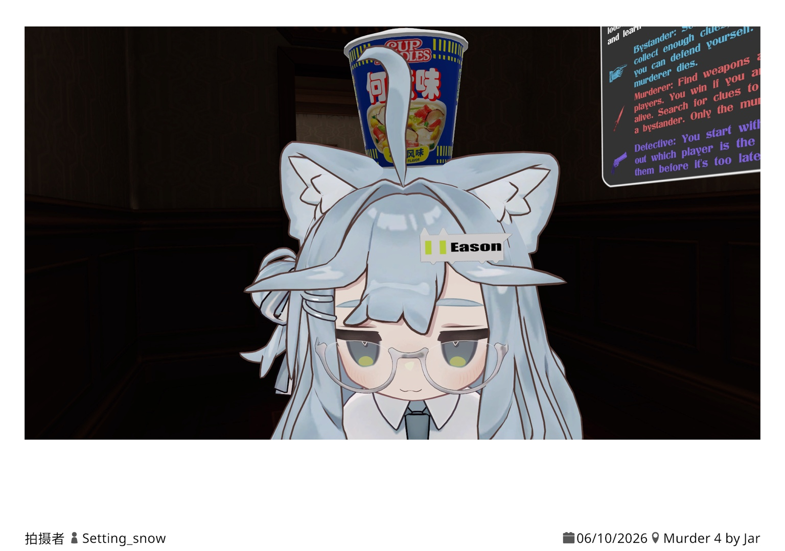

全部文章
共 0 篇文章

图片分享

图片分享

图片分享

图片分享

图片分享



你好，我是 Eason，08来自台湾桃园市，现住广东。一个高中都考不上的废物，在读职高。
下面是我的社交平台联系方式。
本站由 ChatGPT-5.5 模型辅助制作
部署平台为 Render
主题为 kipfel、星空
主页大图作者 / 作者主页：ねこかけ / X
Spotify 音乐解析下载站：spotidown.co